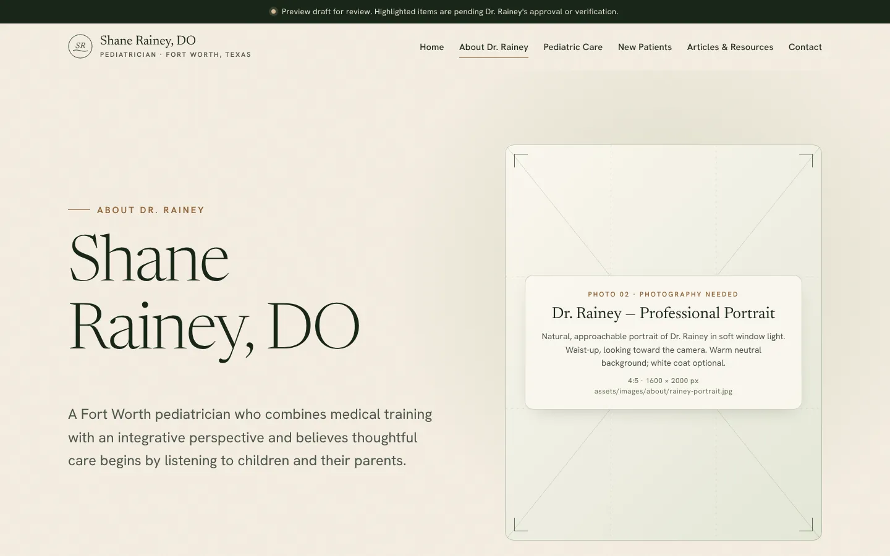
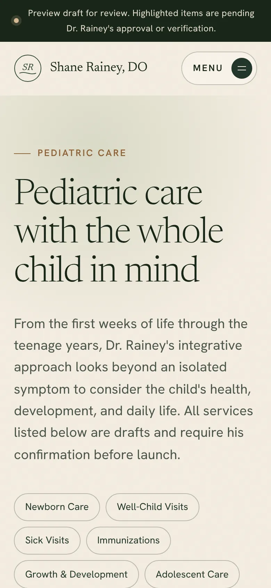

Shane Rainey, DO
A pediatrician's website that sounds like a good first visit
Dr. Shane Rainey is a Fort Worth pediatrician who looks at the whole child: growth, nutrition, sleep, development, and family life alongside medical care. His website needed to explain that approach to parents who are deciding who to trust with their kids.
- Industry
- Integrative pediatrics
- Location
- Fort Worth, Texas
- Status
- PreviewPreview draft awaiting the client's review. Not yet launched.
- What I did
- Messaging, Custom design, Website SEO, Content system

The business goal
Parents don't choose a pediatrician the way they choose a plumber. They're deciding who they'll call at 2 a.m. with a feverish baby. Dr. Rainey's approach is integrative and whole-child, and that's exactly what draws some parents in. It also raises questions: Is this real medicine? Will he listen? How do we start?
The goal was a site that answers those questions calmly and honestly, explains his approach without overpromising, and gives parents one clear next step: becoming a patient.
What parents need to see and do
- Understand the approach in a sentence. The homepage leads with "Thoughtful care for the whole child," followed by a plain explanation of what whole-child care means in practice.
- See that integrative care works with standard pediatrics, not instead of it. The copy says this directly: "An integrative approach works alongside appropriate pediatric evaluation and treatment, not in place of them."
- Meet the doctor. The site makes room for a portrait, a personal introduction video, and a few words about his family, all planned as photo and video slots.
- Know how to start. A New Patients page and a "Become a Patient" button in the hero.
- Find the office. The office on Byers Avenue in west Fort Worth is shown on the homepage and the contact page.
What I built
A seven-page site: Home, About, Pediatric Care, New Patients, Articles & Resources, Contact, and Privacy. Pediatric Care covers six areas of care, from newborn visits to adolescent care, and two starter articles for parents.
Under the design is a content system I now use as the starting point for client sites: each page is a plain Markdown file the practice can edit, a small build script turns it into a fast static site, and every push publishes a new preview. There's no page builder or plugin to keep updated, and nothing to slow it down.
Why these choices
A calm, editorial look. Warm ivory, sage, and deep forest green with a refined serif headline. Pediatric sites tend toward bright primary colors and cartoon icons. Dr. Rainey's approach is thoughtful and unhurried, and the design should feel the same way, closer to a well-made magazine than a waiting room poster.
A real Texas landscape in the hero. Live oak trees in soft light, the headline set over the calm part of the image. It feels local and quiet without pretending to be a photo of the office.
Built for the phone a parent is holding. Many parents will find this site on a phone, often with a child in the other arm. The mobile version keeps the headline, the explanation, and the "Become a Patient" button on the first screen.

Honest about what's not confirmed yet. Medical websites need to be accurate. Every service description, credential, and contact detail is marked for Dr. Rainey's approval in the preview, and the contact details only go into the search-engine data once he verifies them. Articles carry a medical review status and can't go public until they're approved.
No forms that collect health information. Parents can call or visit. The site has no intake form, analytics, or trackers, which keeps patient information out of places it shouldn't be.

Photography planning
The site was designed with ten photo and video slots, each with its size, crop, and a description of what to capture: a professional portrait, Dr. Rainey at work, the waiting and exam rooms, the office entrance, and a short introduction video. Until each photo is taken, the page shows a labeled outline in the exact size and position, so the design never depends on stock photos of people who aren't Dr. Rainey or his patients.

Where it stands
The site is a preview draft for Dr. Rainey's review. Services, credentials, contact details, and articles are waiting on his confirmation before launch.